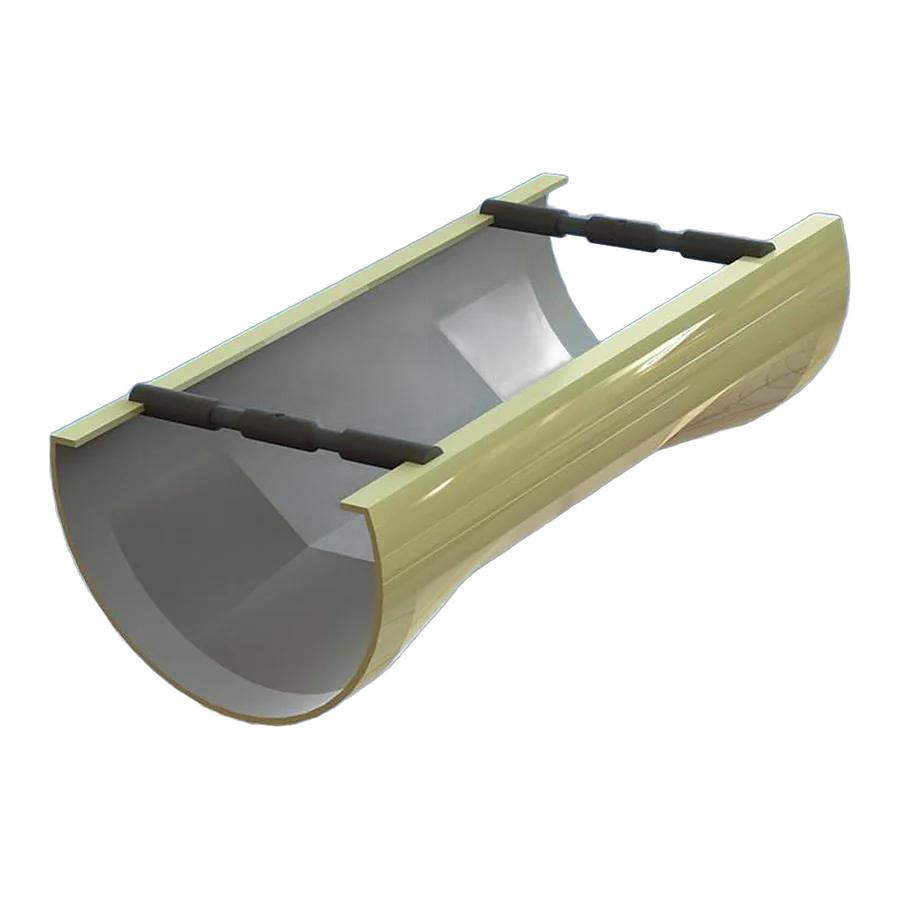
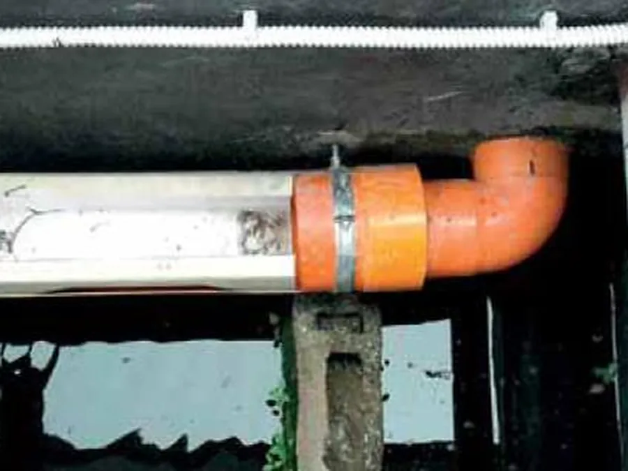

Débitmètres · Canal de comptage
Canal Palmer-BowlusCanal jaugeur circulaire pour conduits gravitaires
Un organe de contraction qui se glisse dans un conduit circulaire partiellement rempli, depuis un regard. Le niveau rehaussé en amont donne directement le débit : la solution économique pour équiper un collecteur gravitaire.
- Conduits
- DN 100 à DN 800
- Débit maximal
- Jusqu’à 1 842 m³/h
- Pente du conduit
- 1 % au maximum
- Matériau
- Résine polyester, 2 mm
Idéal pour
- Collecteurs gravitaires
- Pose depuis un regard
- Effluents chargés
- Réseaux pluviaux
- Coût réduit
LeasingDisponible à l’achat ou en leasing, par mensualités. Comment ça marche
Points forts
Une mesure de débit simple et peu coûteuse, de plus en plus utilisée sur les réseaux.
- Pose depuis un regardInstallation à l’intérieur du conduit existant, à partir d’une découpe.
- Coût réduitUn canal préfabriqué et une mesure de hauteur suffisent.
- DN 100 à 800Dix tailles, jusqu’à 1 842 m³/h.
- Effluents chargésProfil sans obstacle pour les eaux usées.
- Ultrasons ou bulle à bulleLa hauteur d’eau se mesure avec le débitmètre de votre choix.
- Écarteurs fournisSelon le diamètre, pour plaquer le canal contre le conduit.
Principe de mesure
Le Palmer-Bowlus rétrécit la section du conduit : le niveau d’eau monte en amont de la contraction. La relation entre cette hauteur et le débit est connue.
La hauteur se mesure à environ un demi-diamètre en amont de la restriction, par un débitmètre à ultrasons ou bulle à bulle qui calcule le débit.
- Pente du conduit inférieure ou égale à 1 %
- Mesure de niveau à ½ diamètre en amont
- Canal en contact avec le conduit grâce aux écarteurs
Applications
Pour les conduits circulaires gravitaires accessibles depuis un regard.
- Réseaux d’assainissementMesure de débit sur les collecteurs gravitaires.
- AutosurveillancePoints de mesure économiques sur les petits ouvrages.
- Effluents chargésProfil sans obstacle, adapté aux eaux usées.
- Réseaux pluviauxMesure sur conduits partiellement remplis.
Caractéristiques
Débits et dimensions par diamètre d’après la documentation.
| DN 100 | 0,45 · 8,9 m³/h |
|---|---|
| DN 150 | 0,68 · 22,1 m³/h |
| DN 200 | 1,12 · 52,8 m³/h |
| DN 250 | 1,29 · 82,0 m³/h |
| DN 300 | 2,27 · 102,4 m³/h |
| DN 400 | 2,23 · 262,3 m³/h |
| DN 500 | 5,34 · 496,3 m³/h |
| DN 600 | 10 · 709,4 m³/h |
| DN 700 | 15 · 1 177,1 m³/h |
| DN 800 | 18 · 1 841,7 m³/h |
| Matériau | Résine polyester, épaisseur 2 mm |
|---|---|
| Longueur | 250 à 1 350 mm selon le diamètre |
| Pose | À l’intérieur du conduit, à partir d’une découpe |
| Écarteurs | Fournis pour les DN 200, 300, 500 à 800 |
| Pente du conduit | 1 % au maximum |
| Mesure de niveau | À ½ diamètre environ en amont |
Téléchargements
Questions fréquentes
Les questions que nous posent le plus souvent les exploitants et les bureaux d’études.
Quelle pente de conduit est admise ?
La pente du conduit ne doit pas dépasser 1 %.
Où placer la mesure de niveau ?
À une distance d’environ un demi-diamètre en amont de la restriction.
Avec quel débitmètre l’équiper ?
Avec un débitmètre à ultrasons comme l’OC90 ou un débitmètre bulle à bulle comme le DEBULLE ou le BUL’R2.
Faut-il des travaux importants ?
Non. Le canal s’installe dans le conduit existant, depuis un regard, à partir d’une découpe.